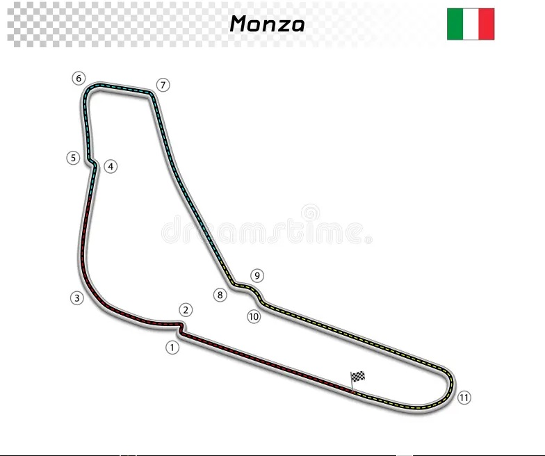

Introducción
Inaugurado en 1922, es uno de los circuitos con más historia en el mundo, siendo sede de casi todas las ediciones del Gran Premio de Italia. El diseño original incluía un óvalo peraltado que ya no se utiliza en F1, pero cuyas ruinas se mantienen como un vestigio de la historia del automovilismo.
Notas Clave de la Pista
Es conocido como el "Templo de la Velocidad" debido a sus altas velocidades puntas y medias. Los equipos optan por una configuración de baja carga aerodinámica para maximizar la velocidad en las largas rectas.
Tipo de Pista
Es un circuito permanente (Autódromo). Se define por un diseño de "stop-and-go" (frenar y acelerar), con largas rectas conectadas por chicanes lentas, lo que exige mucho del motor, los frenos y la tracción del coche.
⬅ Volver a Circuitos